| $q \in \mathbb{R}^n$ | обобщённые координаты |
| $u \in \mathbb{R}^{n-1}$ | управляющие сигналы |
| $\dot q \equiv \frac{dq}{dt}$, $\ddot q \equiv \frac{d^2q}{dt^2}$ | обобщённые скорости и ускорения |
| $M(q) \in \mathbb{R}^{n\times n}$ | матрица кинетической энергии, положительно определённая |
| $C(q, \dot q) \in \mathbb{R}^{n\times n}$ | матрица кориолисовых и центробежных сил, линейна по $\dot q$ |
| $G(q) \in \mathbb{R}^n$ | содержит потенциальные силы |
| $F(q) \in \mathbb{R}^{n \times (n-1)}$ | преобразует управляющие сигналы в обобщённые силы, имеет полный ранг для всех $q$ |
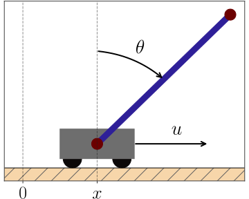
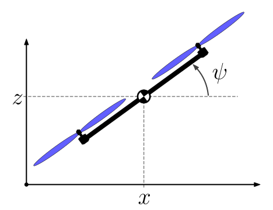
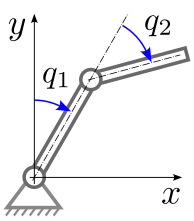
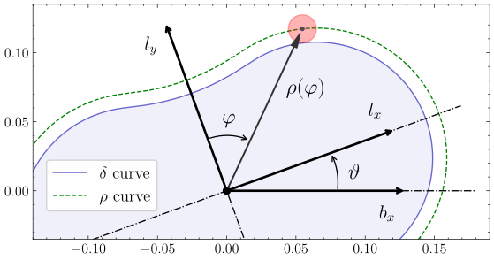
| $Q : \mathbb{R} \to \mathbb{R}^n$ | сервосвязь (виртуальная голономная связь) |
| $\mu \in \mathbb{R}$ | параметр сервосвязи, генератор движения |
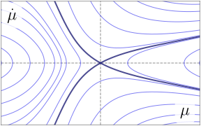
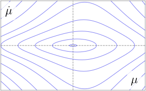
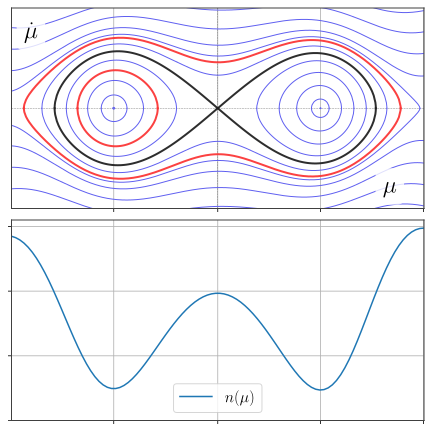
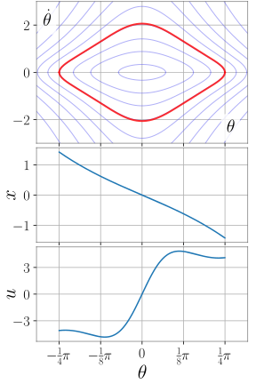
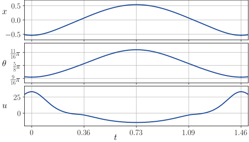
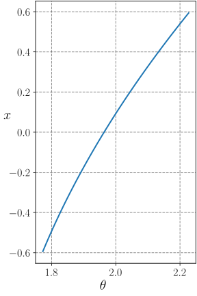
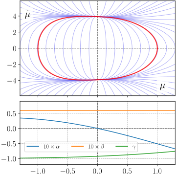
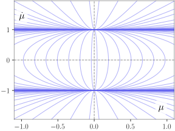
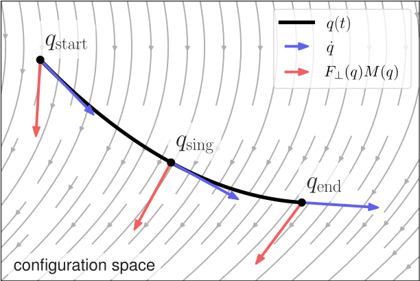
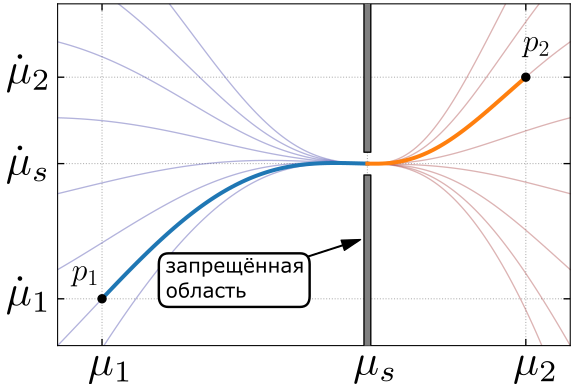
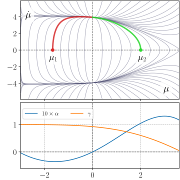
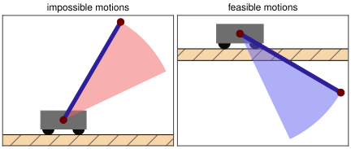
Pendubot. Двойной математический маятник с приводом в первом сочленении. Имеет 2 степени свободы и 1 управление.
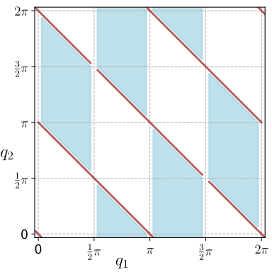
Множество конфигураций, в окрестности которых существуют периодические траектории.
■ множество положений равновесия системы, в окрестности которых существуют периодические траектории.
■ множество конфигураций, в окрестности которых можно применить Теорему 1.
Одна из найденных траекторий, представляющая колебания второго звена в окрестности горизонта. Анимация системы со стабилизирующей обратной связью.
| $x, z$ | координаты центра масс |
| $\psi$ | ориентация |
| $u_1$ | тяга может быть как положительной, так и отрицательной (винты с переменным шагом) |
| $u_2$ | момент силы |
Может ли вертолёт летать "на боку"?
$$\begin{aligned} q_{*}\!\left(t\right) &= \left[\begin{array}{c} \sin t\\ -\frac{1}{2}\sin^{2}t\\ \frac{\pi}{2}-\arctan\left(2\sin t\right) \end{array}\right] \\ u_{*}\!\left(t\right) &= \left[\begin{array}{c} \sin t\sqrt{4\sin^{2}t+1}\\ \frac{12\sin t+2\sin3t}{\left(3-2\cos2t\right)^{2}} \end{array}\right]. \end{aligned}$$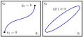
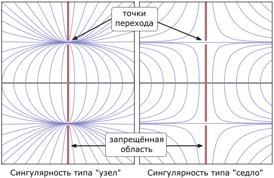
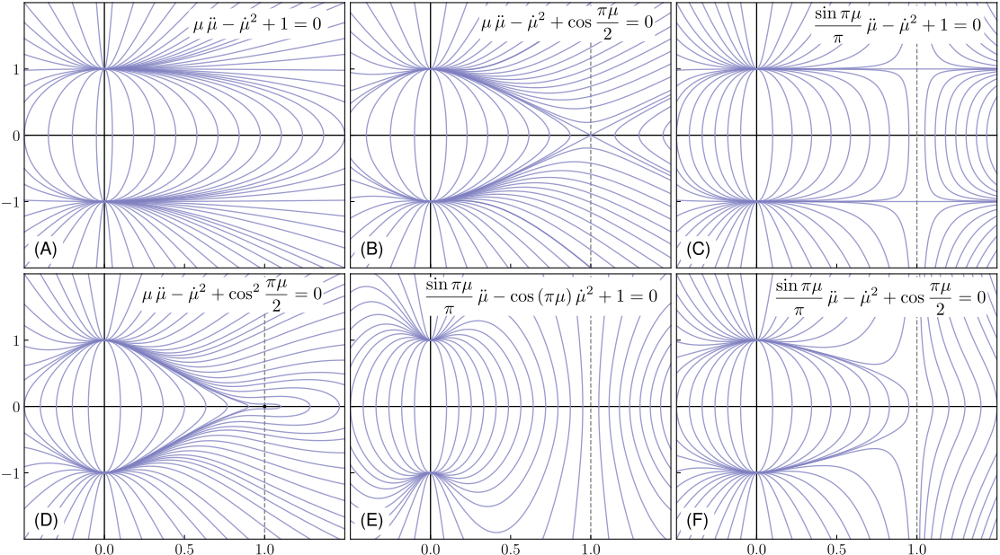
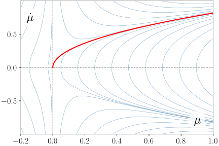
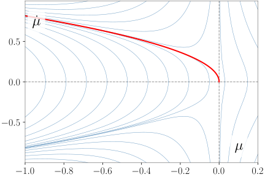
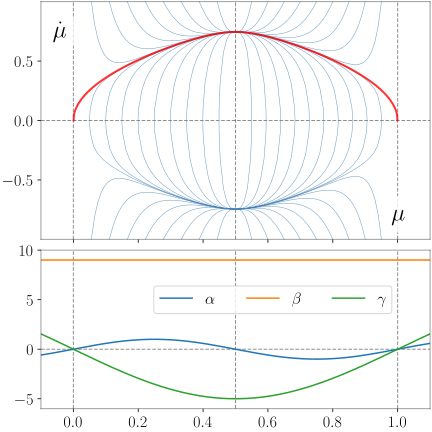
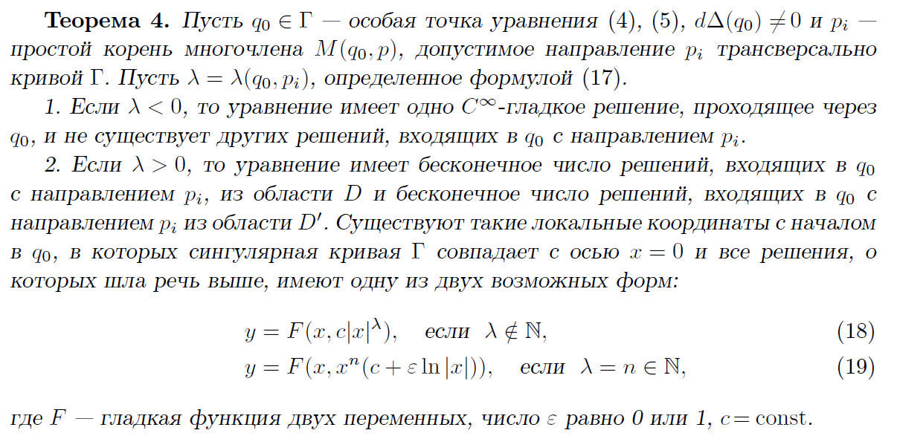